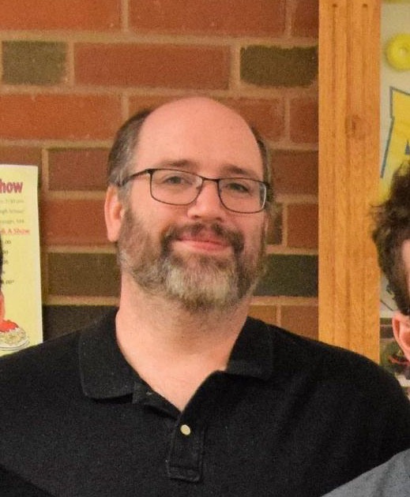

|
My name is Tyler Silva and I am graduating from Assabet Valley Regional Technical School this year. I wanted to make this website to display some of my greatest memories, recognize some of the people that helped me the most, and point out some of the things I wish happened differently. This year has had some of the highest and lowest points of my entire life, and I would like to recognize some of those points on both ends of the spectrum. On this page I will be going over the people i’m grateful for. The robotics page is about my biggest accomplishments this year, the things I’m happy about completing, and my favorite memories. |
|
Jared (not Brudner) is a close friend of mine who has a Bachelors of Science (BS) in physics and is currently working towards his Doctor of Philosophy (Ph.D.) in Applied Mathematics. He has helped me immensely with many things relating to math, such as the code for my physics engine, the code for the FTC Robot (look in robotics to find a link to a demo of it!), the proof of that equation, and general calculus classes. He's also a good writer and has helped me with grammar, word choice, and more for English. |
|
Bill Carr is a mentor for the Assabet Valley Regional Technical High School Robotics team, 157 Aztechs, and has been a major help to me and my programming abilities these past 2 years. He has spent 25 years as a software developer and project lead for large companies, and currently is an owner of New England Clean Energy. He is a graduate if Worcester Polytechnic Institute with bachelor’s degree in Mechanical Engineering and a master’s degree in Computer Science, and has passed a lot of the knowledge he's gained from those degrees and jobs on to many of the students at robotics, including me. |
|  |
Marcus Fletcher is a paraprofessional at Assabet Valley Regional Technical High School, and the lead mentor for the same school's robotics team, 157 aztechs. He joined the robotics team as a student in 1997, and has been a mentor since. He has gained a significant amount of knowledge on how robots work, and shares that with the students on the team in order to help them build a better robot, and learn more about how robots work. He is always willing to help, and makes tremendous sacrifices for the robot, including his own free time, where he occasionally goes an entire week spending 5-6 hours a day. |